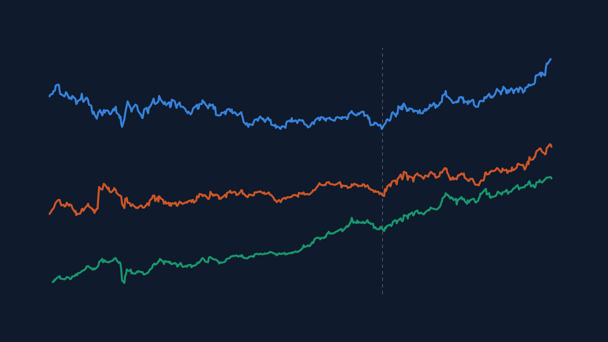
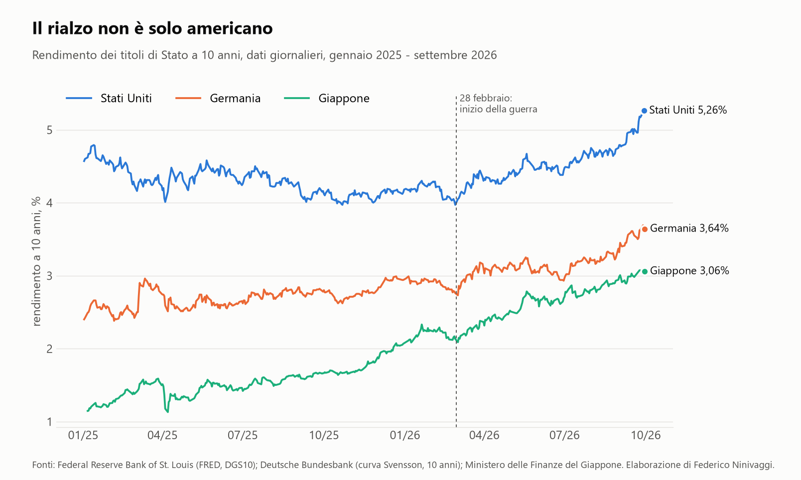
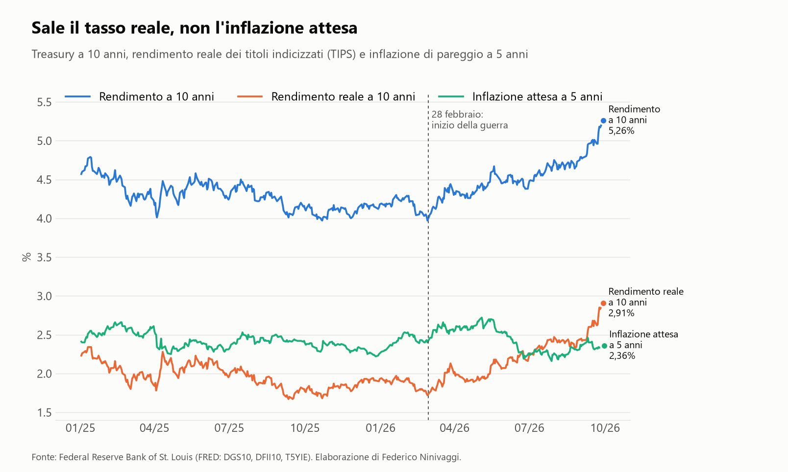
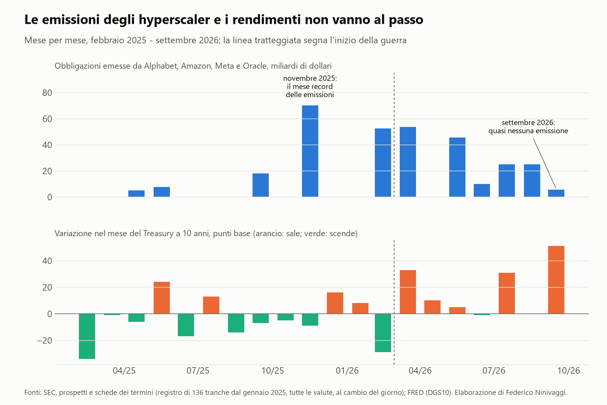
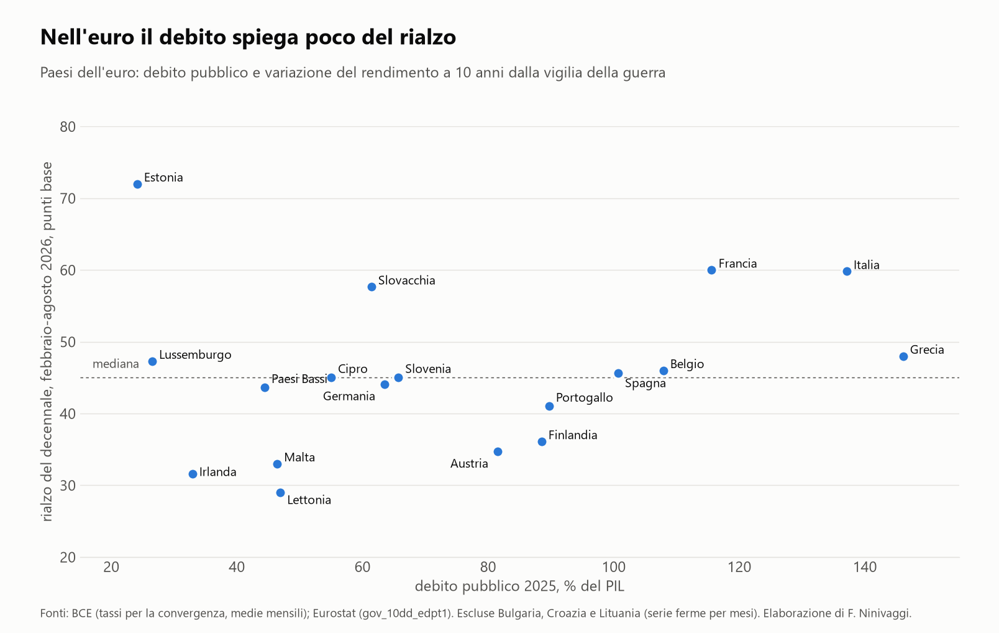

Il costo della guerra arriva sui titoli di Stato
Nº 01 · long read · 1 ott 2026
Il costo della guerra arriva sui titoli di Stato
Lo shock petrolifero ha spinto le banche centrali a stringere e i rendimenti ai livelli più alti da anni. Il debito dei giganti dell’intelligenza artificiale e i conti pubblici pesano meno di quanto si racconti.
Finanza pubblicaMercati e credito
↩ torna a Long read
Lo shock petrolifero ha spinto le banche centrali a stringere e i rendimenti ai livelli più alti da anni. Il debito dei giganti dell’intelligenza artificiale e i conti pubblici pesano meno di quanto si racconti
Il 29 settembre il Treasury a dieci anni, il titolo di Stato americano che fa da riferimento per i mercati di tutto il mondo, ha chiuso al 5,26 per cento, il livello più alto dal giugno 2007. Il trentennale è arrivato al 5,59 per cento, un valore che non si registrava dal 2004. Per le obbligazioni americane settembre è stato il mese peggiore dell’anno: il decennale ha guadagnato mezzo punto in quattro settimane. (1)
Il Bund tedesco a dieci anni ha toccato il 3,7 per cento, massimo dal 2011. In Giappone il decennale ha superato il 3 per cento per la prima volta dal 1996, e il trentennale ha raggiunto il livello più alto da quando il ministero delle Finanze ne pubblica la serie. In Italia il BTP decennale è salito al 4,59 per cento, mentre lo spread sul Bund, cioè la differenza di rendimento con il titolo tedesco, è tornato a 100 punti base (un punto base vale un centesimo di punto percentuale) per la prima volta dalla primavera del 2025. (2)
Le spiegazioni più citate sono due. La prima chiama in causa l’inflazione, risalita con la guerra in Medio Oriente e con il blocco del traffico nello stretto di Hormuz. La seconda chiama in causa gli hyperscaler, i gruppi che costruiscono l’infrastruttura del cloud e dell’intelligenza artificiale, come Alphabet, Amazon, Meta e Oracle: le loro emissioni obbligazionarie, sempre più grandi e sempre più lunghe, sottrarrebbero compratori ai titoli di Stato. A queste si aggiunge una domanda che riguarda da vicino l’Italia, cioè se i mercati stiano di nuovo punendo soprattutto i paesi con i conti pubblici peggiori. I dati pubblici permettono di misurare il peso di ciascuna ipotesi, e il risultato sembra ridimensionare la seconda e la terza ipotesi.
Prima e dopo il 28 febbraio
Fino all’inizio della guerra i grandi mercati del debito seguivano ciascuno una storia propria. Fra la fine del 2024 e il 27 febbraio 2026, vigilia dei primi attacchi americani e israeliani all’Iran, il decennale americano era sceso dal 4,58 al 3,97 per cento, mentre la Fed tagliava i tassi. Il Bund era invece salito di colpo nel marzo 2025, quando i partiti della futura coalizione di governo avevano concordato di riformare il freno al debito per finanziare la difesa: in due giorni il rendimento passò dal 2,5 al 2,9 per cento, con il rialzo giornaliero più ampio dalla riunificazione. In Giappone il decennale era quasi raddoppiato, da 1,1 a 2,1 per cento, mentre la banca centrale usciva dalla stagione dei tassi zero. (3)
Dal 28 febbraio i tre mercati si sono mossi insieme. Fino al 29 settembre il decennale americano è salito di 129 punti base, quello tedesco di 92 e quello giapponese di 95. Un movimento così uniforme, in economie con politiche di bilancio tanto diverse, fa pensare a una causa comune. (4)

Il petrolio e le banche centrali
La causa comune più evidente è lo shock energetico. Il Brent, il petrolio di riferimento sui mercati europei, valeva 71 dollari al barile alla vigilia della guerra e ne valeva 138 il 7 aprile. Dopo essere ridisceso intorno ai 70 dollari a fine giugno, a settembre è risalito fino a 131 con la ripresa degli scontri nello stretto. Negli Stati Uniti l’inflazione al consumo è passata dal 2,8 per cento di gennaio al 3,7 di agosto, mentre quella di fondo, che esclude energia e alimentari, è scesa dal 3,0 al 2,8. (5)
La forma del rialzo indica però per quale strada lo shock sia arrivato ai rendimenti. Il rendimento di un titolo a dieci anni si scompone in due parti. Una compensa l’inflazione attesa e si ricava dal confronto con i titoli indicizzati ai prezzi, che negli Stati Uniti si chiamano TIPS: la differenza fra i due rendimenti prende il nome di inflazione di pareggio. L’altra è il rendimento reale, ciò che resta al netto dei prezzi, e dipende dai tassi che la banca centrale fisserà negli anni a venire e dal premio a termine, il compenso aggiuntivo che si chiede per vincolare il denaro a lungo invece di rinnovare ogni anno un prestito breve.
Dei 129 punti base guadagnati dal decennale americano dalla vigilia della guerra, 119 fanno riferimento al rendimento reale e appena 10 all’inflazione di pareggio, e la proporzione resta la stessa spostando di qualche giorno le date di inizio e di fine. L’inflazione attesa sui cinque anni ha seguito il petrolio fino al 4 maggio, quando ha toccato il 2,72 per cento. Da allora è scesa al 2,36, sotto il livello di febbraio, e nel frattempo il decennale ha guadagnato altri 81 punti. (6)

L’inflazione è arrivata ai rendimenti attraverso le banche centrali. Fra il 10 e il 18 settembre hanno alzato i tassi di un quarto di punto le tre principali banche centrali delle economie avanzate, prima la BCE e per ultima la Banca del Giappone. Il comunicato della Fed registra che «inflation remains elevated». I mercati hanno creduto all’impegno di riportare l’inflazione all’obiettivo e, proprio per questo, hanno prezzato tassi reali più alti: il rendimento reale americano a dieci anni, al 2,91 per cento, è al massimo dal novembre 2008. (7)
Il debito dei giganti dell’intelligenza artificiale
L’ipotesi degli hyperscaler ha un sostenitore autorevole. Interrogato sul rialzo dei rendimenti, il 16 settembre il presidente della Fed, Kevin Warsh, ha indicato tre ragioni. La seconda era la concorrenza per il capitale: «the so-called hyperscalers are out in the market raising funding. And so the competition for capital is real, and I think it partly explains the increase in yields». (8)
Le quantità danno fondamento all’argomento. Fra gennaio e agosto Alphabet, Amazon, Meta e Oracle hanno collocato 157 miliardi di dollari di obbligazioni in dollari, circa un decimo del debito netto aggiunto dal Tesoro americano nello stesso periodo. Sulle scadenze lunghe il peso cresce: i loro titoli a vent’anni e oltre valgono quasi un quarto dell’aumento dei titoli federali di pari durata. Il Tesoro, dal canto suo, non ha accresciuto l’offerta di titoli lunghi rispetto al 2025: ha coperto il fabbisogno con titoli a breve e da settembre riacquista più carta a lunga scadenza, sicché l’offerta lunga aggiuntiva di quest’anno è venuta dalle imprese. (9)
I prezzi raccontano un’altra storia. Nei 12 giorni delle principali emissioni in dollari il rendimento dei Treasury si è mosso come in un giorno qualunque, sia nella seduta stessa sia nella settimana intorno. Si è allargato invece, quasi ogni volta, lo spread delle obbligazioni societarie di qualità elevata, cioè la loro distanza dai titoli di Stato. (10) Alla stessa conclusione arrivava a fine settembre Matthew Hornbach di Morgan Stanley, che al Financial Times parlava di «a small amount of evidence» di un effetto sui Treasury, minore a suo giudizio di quello dei tassi americani in salita e delle prospettive di bilancio. (11) Il costo ricade sugli emittenti. Alphabet, valutata AA+, appena sotto il giudizio massimo delle agenzie di rating, nell’aprile 2025 collocava il decennale a 47 punti base sopra il Treasury; nell’agosto 2026 ne ha pagati 85, mentre lo spread medio delle obbligazioni AA restava a 57. «At the moment you’ve almost got two credit markets, the AI-related issuers and everyone else», osservava Andy Chorlton di M&G. (12)
Il calendario conferma la distanza. Novembre 2025, il mese record per le emissioni degli hyperscaler, ha visto il decennale americano scendere. Settembre 2026, il mese peggiore dell’anno per i rendimenti, è stato fra i più poveri di emissioni. Su venti mesi le variazioni dei rendimenti si muovono con il prezzo del petrolio e non mostrano alcun legame con il volume collocato. (13)

Resta il confronto internazionale. Il Bund e il titolo giapponese sono saliti quasi quanto il Treasury senza che sui loro mercati arrivasse un’ondata paragonabile di obbligazioni tecnologiche. La parte del rialzo propria degli Stati Uniti vale circa un terzo di punto, e dentro quel margine devono stare tutte le cause soltanto americane, hyperscaler compresi. (14)
L’intelligenza artificiale entra probabilmente da un’altra porta. Gli investimenti nei data center sostengono la domanda americana, e il comunicato della Fed annota che «capital investment is robust». Un’economia che investe molto tiene alto il tasso reale e rende la banca centrale meno disposta a tollerare l’inflazione. Il canale è plausibile, e con i dati disponibili resta difficile distinguerlo dalla forza dell’economia nel suo insieme. (15)
I conti pubblici
Per verificare se i mercati puniscano i paesi più indebitati occorre confrontare economie con la stessa banca centrale, perché altrimenti le differenze fra le strette monetarie confondono il quadro. I paesi dell’euro offrono questa condizione: la BCE è la banca centrale per tutti i paesi dell’area, e le differenze nel rialzo dei rendimenti misurano ciò che è proprio di ciascun paese. Fra febbraio e agosto, ultimo mese disponibile, il decennale è salito in 18 paesi dell’area di un valore compreso fra 29 e 72 punti base, con una mediana di 45. (16)
Il debito conta, ma meno di quanto atteso. Nei paesi con un debito superiore al 90 per cento del prodotto il rialzo medio è stato di 52 punti, contro i 43 dei paesi sotto il 60 per cento. La differenza la fanno Francia e Italia, salite entrambe di 60 punti. La Grecia, che ha il debito più alto dell’area ma chiude i conti in avanzo, è salita di 48, in linea con la mediana. Escludendo Italia e Grecia, il legame fra debito e rialzo scompare. (17)

Su un orizzonte più lungo il paese più penalizzato è la Germania, che pure ha uno dei debiti più bassi fra le grandi economie dell’area: dalla fine del 2024 il Bund ha guadagnato 101 punti, più dei titoli francesi e italiani. I mercati sembrano guardare al nuovo debito annunciato e al disavanzo più che allo stock accumulato, e la Germania ha cambiato rotta proprio sul primo fronte. (18)
Che cosa resta da spiegare
Il premio a termine è salito, ma la sua misura dipende dal modello che lo stima. I due più usati, quello della Fed di New York e quello del Federal Reserve Board, gli attribuiscono fra un decimo e quasi la metà del rialzo americano dall’inizio della guerra. (19) In quella forchetta trovano posto i disavanzi pubblici e l’incertezza geopolitica. Vi può rientrare anche una parte dell’offerta degli hyperscaler che i confronti per giorno e per mese non colgono: un effetto lento, che cresce con lo stock di debito, non lascia traccia nelle singole sedute di collocamento, e i dati pubblici non bastano a misurarlo.
L’Italia
Per i titoli italiani l’ordine dei fattori è chiaro. Il BTP decennale sale soprattutto perché sale il Bund, che risente della politica della BCE; lo spread pesa per il resto. «Come ho sempre detto, bisogna stare molto attenti al debito», ha commentato il ministro dell’Economia Giancarlo Giorgetti il giorno in cui lo spread è tornato a 100 punti, mentre il governo apriva la partita della legge di bilancio. (20)
Se il rialzo resta legato ai tassi reali e alle banche centrali, potrebbe rientrare quando il petrolio scenderà. Uno scenario peggiore si aprirebbe se l’inflazione attesa cominciasse a salire insieme ai rendimenti, perché segnalerebbe che i mercati smettono di credere alle banche centrali. Nelle prossime settimane l’inflazione di pareggio a cinque anni potrebbe quindi rivelarsi un indicatore più utile dello spread per capire la direzione dei rendimenti italiani.
Note e fonti
Elaborazioni su dati pubblici di Federal Reserve, BCE, Bundesbank, Ministero delle Finanze del Giappone, Tesoro degli Stati Uniti, Eurostat e Securities and Exchange Commission. Codice e revisione critica dell’analisi sono disponibili su richiesta.
Chiusure giornaliere. Treasury a 10 anni 5,26% il 29 settembre 2026, massimo da giugno 2007; a 30 anni 5,59%, massimo da maggio 2004 (Federal Reserve Bank of St. Louis, FRED, serie DGS10 e DGS30; alcune cronache scrivono «dal 2002» riferendosi ai valori in corso di seduta). Variazione del decennale a settembre: +51 punti base, la più ampia fra i mesi del 2026.
Bund a 10 anni 3,69% il 28 settembre 2026, massimo dall’aprile 2011 (Deutsche Bundesbank, curva dei titoli federali, metodo Svensson). Titolo giapponese a 10 anni 3,08% il 28 settembre 2026, massimo dall’agosto 1996; a 30 anni 4,13% il 1° settembre 2026, il valore più alto della serie, che parte nel 1999 (Ministero delle Finanze del Giappone). BTP e spread al 29 settembre 2026: «un livello che non si vedeva da fine 2023» (D. Conti, ANSA, 29 settembre 2026, ore 20:49). Il massimo mensile del 2023 era stato del 4,89% (ottobre 2023; OCSE, serie IRLTLT01ITM156N su FRED).
Treasury: FRED DGS10, 31 dicembre 2024 e 27 febbraio 2026. Bund: Bundesbank, chiusure del 4 e del 6 marzo 2025; «German government bonds recorded their biggest daily jump since Germany’s reunification in 1990» e accordo «to reform historic debt policy rules to allow an increase in national defense spending» (C. Taylor, CNBC, 6 marzo 2025). Giappone: Ministero delle Finanze, 30 dicembre 2024 e 27 febbraio 2026; il 19 dicembre 2025 la Banca del Giappone aveva portato i tassi allo 0,75%, «their highest level since 1995» (Lim Hui Jie, CNBC, 19 dicembre 2025). Inizio della guerra: 28 febbraio 2026 (Congressional Research Service, U.S. Conflict with Iran, R48887, 26 marzo 2026, sezione «Summary»).
Dal 27 febbraio al 29 settembre 2026, titoli a 10 anni; fonti come nelle note 1 e 2.
Brent: 71,32 dollari il 27 febbraio, 138,21 il 7 aprile 2026, 70,46 il 30 giugno, massimo di settembre 130,80, 113,96 il 29 settembre (FRED DCOILBRENTEU). Inflazione americana su dodici mesi, indice dei prezzi al consumo: totale dal 2,83% di gennaio al 3,71% di agosto; senza alimentari ed energia dal 2,95% al 2,76% (FRED CPIAUCSL e CPILFESL).
Dal 27 febbraio al 29 settembre 2026: TIPS a 10 anni (FRED DFII10) e inflazione di pareggio a 10 anni (FRED T10YIE). Con sei combinazioni di date di inizio (20 febbraio, 27 febbraio, 2 marzo) e di fine (25 e 29 settembre) la quota reale resta fra il 92 e il 96 per cento. Inflazione di pareggio a 5 anni (FRED T5YIE): 2,40% il 27 febbraio, 2,72% il 4 maggio 2026, 2,36% il 30 settembre; il decennale era al 4,45% il giorno del picco. L’inflazione di pareggio contiene anche un premio per il rischio d’inflazione e risente della minore liquidità dei TIPS.
BCE, decisioni di politica monetaria del 10 settembre 2026: tasso sui depositi al 2,50%. Federal Reserve, comunicato del 16 settembre 2026, voto 12 a 0: intervallo dei fed funds al 3,75-4%. Banca del Giappone, 18 settembre 2026: tasso all’1,25%, «the highest level since 1995» (CNBC, 18 settembre 2026). TIPS a 10 anni al 2,91% il 29 settembre 2026, massimo da novembre 2008 (FRED DFII10).
K. Warsh, conferenza stampa del comitato di politica monetaria della Fed (FOMC) del 16 settembre 2026, trascrizione ufficiale, p. 12 di 15. Le altre due ragioni indicate sono la forza dell’economia («economic strength») e la geopolitica («geopolitics»).
Gennaio-agosto 2026. Hyperscaler: 157 miliardi di dollari emessi in dollari (212 in tutte le valute), di cui 64 con scadenza a 20 anni o più; registro dei prospetti depositati alla SEC da Alphabet, Amazon, Meta e Oracle. Il registro è un pavimento: non contiene i veicoli dei centri dati né le emissioni non registrate alla SEC. Tesoro: debito negoziabile +1.557 miliardi, di cui titoli a breve +701, notes +582, bonds +276 (Monthly Statement of the Public Debt, tabella 1, 31 dicembre 2025 e 31 agosto 2026). Rapporti: 10 per cento del totale, 23 per cento dei bonds. Negli stessi mesi del 2025 il Tesoro aveva aggiunto +283 in bonds, +646 in notes e +182 in titoli a breve. Il 5 agosto 2026 il Tesoro ha confermato le aste di titoli a cedola invariate «for at least the next several quarters»; dal 9 settembre ha raddoppiato i riacquisti sulle scadenze da 10 a 30 anni.
12 emissioni in dollari da gennaio 2025 ad agosto 2026, da 5 a 37 miliardi l’una (stesso registro della nota 9). Treasury a 10 anni: variazione al 61° percentile delle medie su date estratte a caso (giorno prima e giorno dopo), al 55° su una finestra di sette giorni; a 30 anni al 75° e al 59° percentile. Spread dell’indice ICE BofA delle obbligazioni AA: +2,6 punti base in media, al 99,9° percentile (FRED; 2.000 estrazioni casuali).
E. Healy, E. Herbert, M. Chan, «AI giants are transforming debt», Financial Times, 28 settembre 2026, p. 5: «We can find a small amount of evidence, through US primary dealer balance sheet holdings of corporate bonds». Il giudizio sul peso relativo è la parafrasi del giornale.
Spread di collocamento sul Treasury, titolo a dieci anni: schede dei termini depositate alla SEC da Alphabet il 28 aprile 2025 e il 7 agosto 2026; indice ICE BofA AA su FRED, 57 e 57 punti base nelle due date. A. Chorlton, M&G, in Financial Times, 28 settembre 2026, p. 3.
Febbraio 2025-settembre 2026, 20 mesi. Emissioni degli hyperscaler in tutte le valute: 70 miliardi di dollari a novembre 2025, con il decennale a -9 punti base nel mese; 6 miliardi a settembre 2026, con il decennale a +51. Correlazione fra emissioni del mese e variazione del decennale -0,02; fra variazione del Brent e variazione del decennale 0,55. Con venti mesi la correlazione è un indizio, non una prova.
Differenza fra il rialzo americano e quello tedesco 37 punti, fra quello americano e quello giapponese 34. Alphabet ha emesso anche in euro e in yen (nota 9, importi «in tutte le valute»).
Federal Reserve, comunicato del FOMC, 16 settembre 2026: «Productivity growth is strong, and capital investment is robust».
Rendimenti a 10 anni per la convergenza, medie mensili (BCE, dataset IRS), febbraio e agosto 2026; settembre non era ancora pubblicato. Ventuno paesi nell’euro, compresa la Bulgaria dal 1° gennaio 2026; esclusi Bulgaria, Croazia e Lituania, le cui serie restano ferme per più di tre mesi su venti e non esprimono un prezzo di mercato. Il rialzo massimo, in Estonia, riguarda un mercato con pochissimo debito pubblico.
Debito e saldo 2025 in percentuale del PIL: Eurostat, gov_10dd_edpt1. Francia 115,6 e -5,1; Italia 137,1 e -3,1; Grecia 146,1 e 1,7. Paesi sopra il 90 per cento: Belgio, Francia, Grecia, Italia, Spagna; sotto il 60 per cento: 7 paesi. Correlazione fra debito e rialzo 0,19 su 18 paesi, 0,02 senza Italia e Grecia; fra saldo e rialzo -0,22. Sugli undici mercati più grandi la correlazione con il debito sale a 0,69, trainata dagli stessi due paesi.
Dicembre 2024-agosto 2026, medie mensili BCE: Germania +101, Francia +99, Italia +66 punti base; debito tedesco 63,5 per cento del PIL nel 2025 (Eurostat).
Dal 27 febbraio al 29 settembre 2026. Modello ACM (Adrian, Crump e Moench, Federal Reserve Bank of New York): attese sui tassi +94 punti base, premio a termine +25. Modello di Kim e Wright (Federal Reserve Board, FRED THREEFYTP10): premio a termine +56. Con le sei combinazioni di date della nota 6 la quota del premio va dall’11 al 47 per cento.
G. Giorgetti, citato da D. Conti, ANSA, 29 settembre 2026. BTP a 10 anni: 3,39% nella media di febbraio 2026 e spread a 64 punti (OCSE, medie mensili su FRED); 4,59% e 100 punti il 29 settembre (ANSA). Del rialzo di 120 punti base, 36 vengono dallo spread e il 70 per cento dal Bund; il confronto mescola una media mensile e una chiusura ed è quindi approssimato.
Uscito su LinkedIn il 1° ottobre 2026: l’articolo originale.
Federico Ninivaggi · 1 ottobre 2026